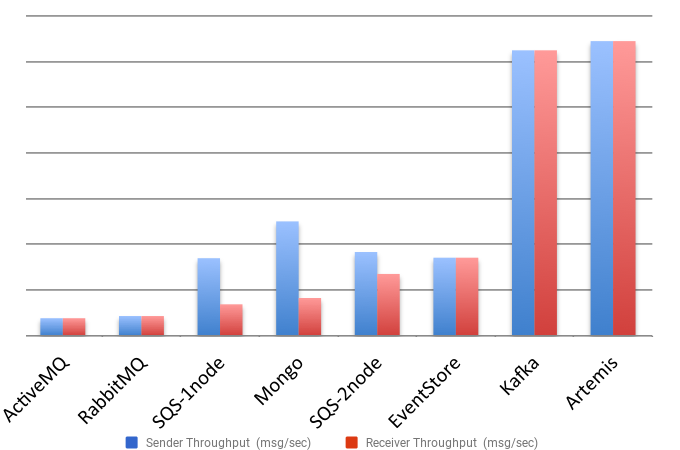
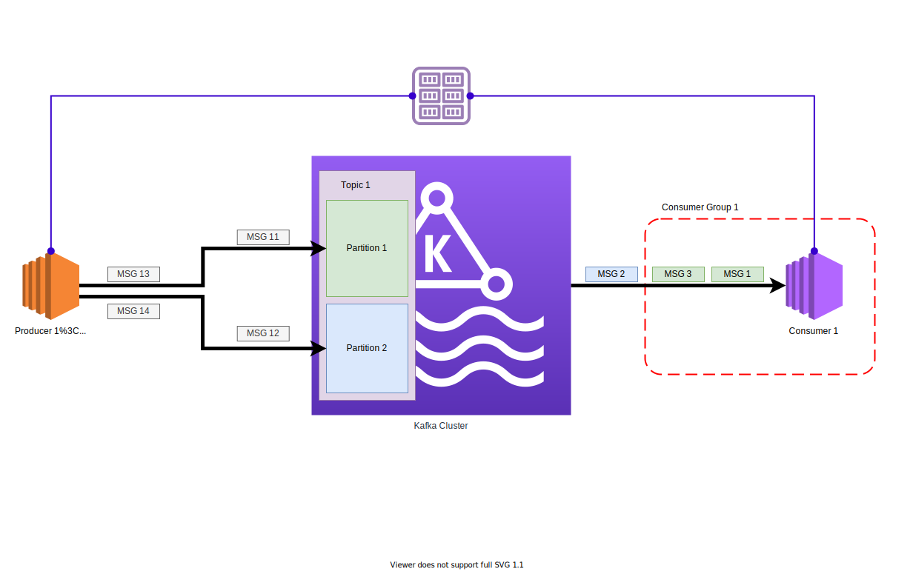
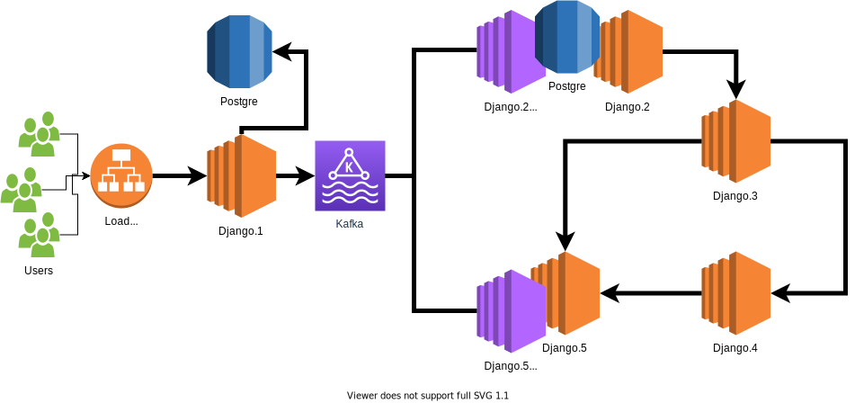

Mikalai Saskavets
I'm a:
— Full Stack Web Developer
— DevOps Enthusiast
I'm with:
• iTechArt
• PyCon Belarus Program Committee
• Minsk Python Meetup Program Committee
Django is Awesome for Rapid Development
Monolithic Rapid Developed MVP
- Scalability issues
- Readability issues
- Maintainability issues
Microservices: Coupling and Cohesion?

Distributed Monolith?
Here we are

Synchronous Communication
Synchronous Communication
How to bring a pinch of Async to Django world?


Celery
Microservices
Synchronous Communication
~Async Communication (Celery)
~Async Communication (Celery)
shall we use
Kafka here???
Released in 2011 by LinkedIn
Distributed Streaming Platform
Kafka for what??
- Messaging
- Metrics
- Log Aggregation
- Website Activity Tracking
- Queue
- ... and others ...
Alternatives for Kafka
2
-
NATS
-
Apache Pulsar
-
Artemis
Some throughput comparsion

Some throughput comparsion
Why Kafka???
- impressive performance
- highly scalable
- pretty mature
Let's start with something simple
1 topic
2 partitions per topic
1 consumers group
1 consumer in group
1 producer
Strategies to put a message to a specific partiton
- random
- by key:
CRC32(message.key)Murmur2(message.key)
- ...
Kafka: Message (Record) Format
length: varint
attributes: int8
bit 0~7: unused
timestampDelta: varint
offsetDelta: varint
keyLength: varint
key: byte[]
valueLen: varint
value: byte[]
Headers => [Header]
Kafka: Message
key: byte[ ]
value: byte[ ]
Kafka: Serializers
JSON, Protobuf, Thrift, Avro
Avro: Pros
- platform independent
- binary compressed data
- schema (in JSON format)
- schema migration flow
- schema is in the message or somewhere outside
- ...
Kafka: Schema overhead
| Approach |
Schema |
Payload |
Total |
Overhead |
| JSON (Schemaless) |
0 |
74 |
74 |
~ 2x |
| Schema + Avro Payload |
204 |
34 |
238 |
~ 6x |
| Schema ID + Avro Payload |
4 |
34 |
38 |
1x |
Kafka: Schema Registry Concept

Messages flow (with Schema Registry)

Messages flow. Consumer Side. Part 1
Messages flow. Consumer Side. Part 2
Messages flow. Consumer Side. Part 3
Messages flow. Consumer Side. Part 4
Messages flow. Consumer Side. Part 5
Messages flow. Consumer Side. Part 6
Python libraries to work with Kafka
-
kafka-python
-
pykafka
-
confluent-kafka-python
-
aiokafka
What to choose?
|
kafka-python |
pykafka |
confluent-kafka |
| Stars on GitHub |
~ 3 400 |
~ 1 000 |
~ 1 500 |
| Contributors* |
0 / 4 / 13 / 186 |
1 / 5 / 10 / 77 |
0 / 1 / 6 / 57 |
| Releases track |
fine |
hm… (2018???) |
fine |
| Development track |
fine |
hm… |
fine |
What about Throughput? Some benchmarks
|
time (s) |
MBs/s |
Msgs/s |
|
| confluent-kafka-python |
5.4 |
17 |
183 000 |
|
| kafka-python |
68 |
1.4 |
15 000 |
|
Some preparations
# vars.py
import sys
server = sys.argv[1] # <-- kafka server url
registry = sys.argv[2] # <-- schema registry url
topic = sys.argv[3] # <-- topic name
group = sys.argv[0] # <-- consumer group id
Kafka Producer on Python
import vars
from confluent_kafka import Producer
conf = {'bootstrap.servers': vars.server}
producer = Producer(**conf)
for num in range(1000):
producer.produce(vars.topic, value=str(num))
# Wait until all messages have been delivered
producer.flush()
Kafka Producer on Python
import vars
from confluent_kafka import Producer
conf = {'bootstrap.servers': vars.server}
producer = Producer(**conf)
for num in range(1000):
producer.produce(vars.topic, value=str(num),
key=str(num))
# Wait until all messages have been delivered
producer.flush()
Kafka Consumer on Python
import vars
from confluent_kafka import Consumer
conf = {'bootstrap.servers': vars.server,
'group.id': vars.group,
'enable.auto.commit': 'true'}
consumer = Consumer(conf)
consumer.subscribe([vars.topic])
try:
while True:
message = c.poll(timeout=1.0)
if message is None: continue
else:
print(message)
finally:
consumer.close() # ... to commit final offsets.
Avro Schema for messages
# avro_schemas.py
from confluent_kafka import avro
record_schema = avro.loads("""
{
"namespace": "example.net.foobar.serialization.avro",
"name": "FooBar",
"type": "record",
"fields": [
{"name": "foo", "type": "string"},
{"name": "bar", "type": "int"},
]
}
""")
Kafka Producer with Avro
import vars
from confluent_kafka.avro import AvroProducer
from avro_schemas import record_schema
conf = {'bootstrap.servers': vars.server,
'schema.registry.url': vars.registry}
producer = AvroProducer(conf, default_value_schema=record_schema)
for num in range(1000):
producer.produce(vars.topic,
value={"foo": str(num), "bar": num})
# Wait until all messages have been delivered
producer.flush()
Kafka Producer with Avro
import vars
from confluent_kafka.avro import AvroProducer
from avro_schemas import record_schema
conf = {'bootstrap.servers': vars.server,
'schema.registry.url': vars.registry}
producer = AvroProducer(conf, default_value_schema=record_schema)
for num in range(1000):
producer.produce(vars.topic,
value={"foo": str(num), "bar": num},
value_schema=record_schema)
# Wait until all messages have been delivered
producer.flush()
Kafka Consumer with Avro
import vars
from confluent_kafka.avro import AvroConsumer
conf = {'bootstrap.servers': vars.server, 'group.id': vars.group,
'schema.registry.url': vars.registry}
consumer = AvroConsumer(conf)
consumer.subscribe([vars.topic])
try:
while True:
message = c.poll(timeout=1.0)
if message is None: continue
else:
print(message.value()['bar'])
finally:
consumer.close() # ... to commit final offsets.
Launch Kafka Consumer with Django
./manage.py run_kafka_consumer
~Async Communication (Celery)
~Async Communication (Kafka)
With Kafka. Don't forget about databases

~Async Communication (Kafka)
What if we have few databases?
Relational Database → Kafka
Stream data from RDBS to Kafka

Stream data from PostgreSQL to Kafka

What if we have few databases?
Application Diagram. Rearrange a bit
Application Diagram + External Data Handling
Application Diagram + Marketing Website
Summary
- На каком-то этапе вам придётся переписать ваш монолитный MVP
- Используйте микросервисы, если вы готовы ломать свои устои
- Прогнозируете высокую нагрузку - готовьтесь погрузиться в мир Highload
- Не используйте Кафку, если не ожидаете действительно большой нагрузки
- Кафка - довольно сложная технология, как в применении, так и в понимании
- В микросервисном мире язык программирования перестаёт быть во главе угла
Kafka: Replication

Kafka: Reset Consumer Group Offsets tooling
Reset to Datetime
Reset from Duration
Reset to Earliest
Reset to Latest
Reset to Current Time
Reset to Offset
Shift Offset by 'n'
Reset from file
More strategies to put a message to a specific partiton
- random
- by key:
CRC32(message.key)CRC32(message.key) + random if no key or key value is NULLMurmur(message.key)Murmur(message.key) + random if no key or key value is NULLMurmur2(message.key)Murmur2(message.key) + random if no key or key value is NULLcustom_function(message.key)
custom_function(message)


 art by René Aigner
art by René Aigner